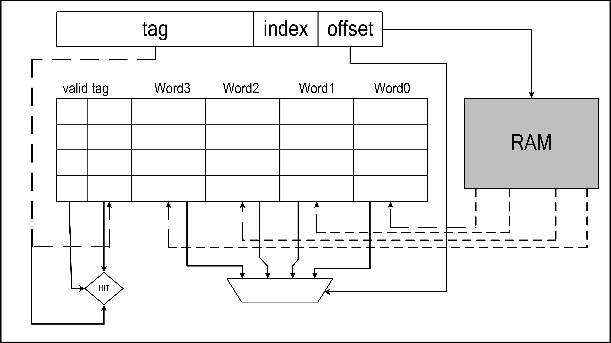

7. L1C¶
7.1. 简介¶
L1 Cache Controller是位于处理器外部,用于管理Flash上代码或者数据缓冲，提高CPU访问Flash速度的单元模块。架构如下图:

LIC架构
L1C是集成在处理器和Flash中间的高速单元，因为处理器的速度非常快，当处理器访问Flash需要等待的时间较长， 等待的时间即代表浪费的时间，浪费的时间越少代表效能的浪费越多，L1C缓存可以在处理器与Flash中间当作润滑的角色， 让处理器效率提升。
7.2. 主要特征¶
- 4路相联映射缓存(4-way Set-Associative mapping)
- 可调变的缓存空间大小
- 与TCM地址空间连续，可以方便的配置L1C空间为TCM空间
- 支持缓存效能统计
7.3. 功能描述¶
7.3.1. TCM与Cache RAM资源相互变换¶
为了增加内存使用效率，支持将Cache的32K RAM全部或者部分调整为TCM空间，这样方便用户根据实际情况，调整内存使用方式和效率。 Cache的默认大小为32K，分为4条way，每条way是8K，调整的单位是1条way，也就是8K.ITCM的默认大小是16K。通过WayDisable的设定 可以灵活的调整Cache和ITCM的实际空间大小。
| WayDisable | Cache | ITCM |
| none | 32K | 16K |
| one way | 24K | 24K |
| two way | 16K | 32K |
| three way | 8K | 40K |
| four way | 0K | 48K |
7.3.2. 缓存(Cache)¶
缓存每条line buffer单位为32字节，采用4路相联映射缓存，应用架构如下:

缓存架构
每组相联映射缓存包含两个部分，第一个是tag，包含了有效值和地址映像关系， 第二部分是数据储存。当处理器存取缓存时，缓存处理器会比对地址和tag的关系， 当地址比对成功时代表可以直接从缓存取数据， 反之缓存处理器则会通过AHB Master抓取相关的数据并同时放进缓存和响应处理器的数据。 当大部分的数据都可以在tag中比对成功时，可以大幅度缩短处理器的等待时间， 增加使用效率。
7.4. 寄存器描述¶
| 名称 | 描述 |
| l1c_config | L1C feature configuration |
| hit_cnt_lsb | Low 32-bit hit couter |
| hit_cnt_msb | High 32-bit hit counter |
| miss_cnt | Miss counter |
7.4.1. l1c_config¶
地址： 0x40009000
| 31 | 30 | 29 | 28 | 27 | 26 | 25 | 24 | 23 | 22 | 21 | 20 | 19 | 18 | 17 | 16 |
| RSVD | |||||||||||||||
| 15 | 14 | 13 | 12 | 11 | 10 | 9 | 8 | 7 | 6 | 5 | 4 | 3 | 2 | 1 | 0 |
| RSVD | WAYDIS | RSVD | CNTEN | CACABLE | |||||||||||
| 位 | 名称 | 权限 | 复位值 | 描述 |
| 31:12 | RSVD | |||
| 11:8 | WAYDIS | R/W | 4'B1111 | Disable part of cache ways & used as ITCM |
| 7:2 | RSVD | |||
| 1 | CNTEN | R/W | 0 | Cache performance counter enable |
| 0 | CACABLE | R/W | 0 | Cachable region enable |
7.4.2. hit_cnt_lsb¶
地址： 0x40009004
| 31 | 30 | 29 | 28 | 27 | 26 | 25 | 24 | 23 | 22 | 21 | 20 | 19 | 18 | 17 | 16 |
| CNTLSB | |||||||||||||||
| 15 | 14 | 13 | 12 | 11 | 10 | 9 | 8 | 7 | 6 | 5 | 4 | 3 | 2 | 1 | 0 |
| CNTLSB | |||||||||||||||
| 位 | 名称 | 权限 | 复位值 | 描述 |
| 31:0 | CNTLSB | R | 0 | Hit counter low 32-bit |
7.4.3. hit_cnt_msb¶
地址： 0x40009008
| 31 | 30 | 29 | 28 | 27 | 26 | 25 | 24 | 23 | 22 | 21 | 20 | 19 | 18 | 17 | 16 |
| CNTMSB | |||||||||||||||
| 15 | 14 | 13 | 12 | 11 | 10 | 9 | 8 | 7 | 6 | 5 | 4 | 3 | 2 | 1 | 0 |
| CNTMSB | |||||||||||||||
| 位 | 名称 | 权限 | 复位值 | 描述 |
| 31:0 | CNTMSB | R | 0 | total hit count = hit_cnt_msb*2^32 + hit_cnt_lsb |
7.4.4. miss_cnt¶
地址： 0x4000900c
| 31 | 30 | 29 | 28 | 27 | 26 | 25 | 24 | 23 | 22 | 21 | 20 | 19 | 18 | 17 | 16 |
| MISSCNT | |||||||||||||||
| 15 | 14 | 13 | 12 | 11 | 10 | 9 | 8 | 7 | 6 | 5 | 4 | 3 | 2 | 1 | 0 |
| MISSCNT | |||||||||||||||
| 位 | 名称 | 权限 | 复位值 | 描述 |
| 31:0 | MISSCNT | R | 0 | Miss counter |